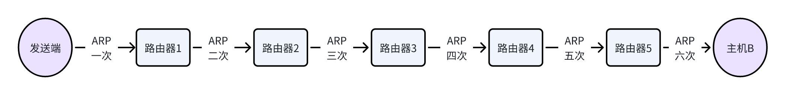
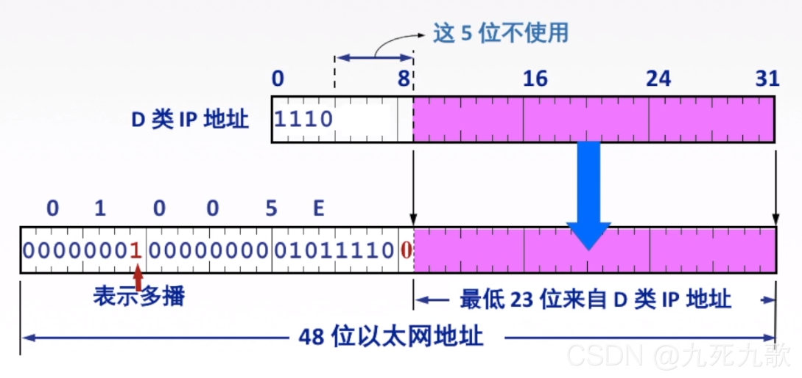

网络层
一、概述
网络层概述
基础概念：
网络层主要任务是把分组从远端传送到目的端，为分组交换网上的不同主机提供通信服务。
网络层传输单位是数据报。
数据报与分组的关系：数据报是比较长的，而分组相当于把数据报进行切分而形成的。
主要功能：
找路与分组转发：通过路由算法找到最佳路径，并把分组通过最佳路径转发出去。
异构网互联：不同的额网络叫做易购网，网络层可以通过路由器吧这些网络连接起来，构成一个更大的网络。
拥塞控制：如果所有节点都来不及接受分组，而丢弃大量分组的话，网络就处于拥塞状态。因此采取一定错误，缓解这种拥塞，拥塞控制有静态的开环控制和动态的闭环控制两种方法。
电路交换、报文交换和分组交换
数据交换
数据通过网络核心路由器从源主机到目的主机依托的就是数据交换技术。
比如网络中有六台主机，总不能像下面这样连通道。造价非常高。
通过交换设备连连接：
交换设备可以是数据链路层的交换机、网桥、也可以是网络层的路由器。这样子连接信道明显就比之前的方法简单，有个缺点就是交换设备上不能连接太多的主机，因为信道不能拉的太长。改进之后的方法：
用一个庞大的交换网络代替单一的一个交换设备。
分类：
电路交换
报文交换
分组交换
数据报交换方式
虚电路交换方式
电路交换
电话网络
电路交换阶段
电路交换的优点：
通信时延迟小
有序传输
没有冲突（独占资源）
实时性强
电路交换的缺点：
建立连接时间较长
线路独占，使用率低
灵活性差
无差错控制能力
电路交换特点：
收房双方在信道中独占资源，没有冲突。
报文交换
报文指的是源应用发送的信息整体。比如一张图片、一段视频、一份word等。报文会被传输层分割成报文段，当然如果报文比较短就不回分割，然后给报文加上ip地址、物理地址，并在物理层上进行数据传输。
电路交换的特点是在交换设备中传播时，已经固定好了，必须从A到B到C，报文交换比较灵活，可以从A到B也可以从A到C。
报文交换优点：
无需建立连接。
存储转发、动态分配线路。
线路利用率较高。
多目标服务。
报文交换缺点：
有存储转发时延。（因为交换设备要把报文存储起来，待链路空闲后转发）
报文大小不固定，需要网络节点有较大缓存空间。
分组交换
介绍：把分组分成小的数据块，在进行存储转发，就是分组。
优点：
无需建立连接。
存储转发，动态分配线路。
线路可靠性高。（分组短，出错概率低）
线路利用率高。（同报文交换，线路不固定）
相当于报文交换，存储管理更容易。（把报文分成块儿）
缺点：
有存储转发时延。
需要额外传输信息量。（分组在报文切片的基础上还要额外添加一些信息，目的地址、源地址、编号等）
乱序到目的主机时，要对分组排序重组。
报文交换与分组交换对比
报文交换中一个文件只能存在于一个交换设备中，而分组交换一个文件可以每个部分都在不同的交换设备中。
报文交换就好比一个质点过桥，所有数据都集中在质点上；而分组交换相当于一个大巴过桥，数据被拆分君泰在大巴的每个座位上。报文交换的时延就是质点到达目的地的时延，而分组交换的时延就是大巴头进桥算起，尾巴出桥结束。
三种数据交换方式总结
报文交换和分组交换采用存储转发技术。
传送数据量大，且传送时间大于呼叫时间，选择电路贾环、电路交换传输时延最小（不需要存储转发）。
从信道利用率看，报文交换和分组交换由于电路交换，分组交时延更小。
数据报和虚电路交换方式
数据报交换方式：为网络层提供无连接服务。无连接服务指的不是实现为分组的传输确定传输路径，而是每个分组独立确定传输路径，不同分组传输路径可能不同。
虚电报交换方式：为网络层提供连接服务。连接服务是指首先为分组传输确定传输路径（建立连接），然后沿该路径（连接）进行传输系列分组，系列分组传输路径相同，传输结束后拆除连接。切实虚电报交换方式就是把分组交换方式和电路交换方式进行了融合。
| 计算机网络系统层次 | 传输单元名词 | 具体内容 |
|---|---|---|
| 应用层 | 报文 | 比如qq就是应用层，用qq发送的文件就属于报文 |
| 传输层 | 报文段 | 比如下载链接，就不回分割。传输一个文件就需要分割成报文段，每个报文段单独传输 |
| 网络层 | IP数据报、分组 | IP数据报就是给报文段封装上了网络层的IP地址，包括目的地址、源地址。如果IP数据报太大，就再进行切割，小的数据报就是单独的一个分组 |
| 数据链路层 | 帧 | 在分组的基础上，头部加上mac物理地址，尾部加上fcs帧检验序列 |
| 物理层 | 比特流 | 01101010， 01101， 01010101010，010101010100 |
被因特网使用的数据交换方式：
首先数据报最大的特点是无连接，也就是不需要建立连接，不用事先为分组的传输确定传输路径，每个分组独立确定传输路径，不同分组传输路径可能不同。
每个分组携带源和目的地址。
路由器根据分组的目的地址转发分组：基于路由器协议/算法构建转发表，检索转发表，每个分组独立选路。
虚电路交换方式：
介绍：虚电路就是将数据报方式和电路方式结合，发挥两者的优点。
虚电路：一条源主机到目的主机类似于电路的路径（逻辑连接），路径上所有节点都要维持这个虚电路的建立，都维持一张虚电路表，每一项记录一个打开的虚电路的信息。
通信过程：
第一步：建立连接，每个分组携带虚电路号，而非目的地址。源主机发送”呼叫请求“分组并收到”呼叫应答“分组后才算建立连接。
第二步：数据传输，属于全双工通信。
第三步：释放链接，源主机发送”释放请求“分组以拆除虚电路。
思考：
虚电路有什么用呢 ？分组发送到路由器里面，路由器会通过虚电路号判断接下来应该发送给哪个路由器。
类似于比图论，虚电路号就是每个号码都对应一条路径，而数据报服务的目的地址是知道其实位置和终止位置，路由器提供路径算法。
数据报与虚电路的区别：
数据报不需要建立连接；虚电路服务必须要建立连接。
数据报服务每个分组都要有完整的目的地址；虚电路仅在建立连接阶段使用，之后每个分组使用长度较短的虚电路信息。
数据报服务每个分组独立的进行路由选择和转发；虚电路服务属于同一个虚电路的分组按照同一路由转发。
数据报服务不能保证分组的有序到达；虚电路服可以保证分组的有序到达，因为有连接。
数据报服务不保证可靠性通信，可靠型由用户主机来保证；虚电路服务可考星由网络保证。
数据报服务在出现故障节点会丢失分组，其他分组路径发生变化，可以正常传输；虚电路服务所有经过故障节点的虚电路都不能正常服务，因为线路是固定的。
数据报服务有用户主机流量进行流量控制，不保证数据报的可靠性；虚电路服务可由交换网负责，也可由用户主机负责。
二、路由算法与路由协议
路由算法
概述
路由器里面有个东西叫做路由表，它里面放着网络IP、子网掩码、下一跳IP地址、接口。这些都是通过路由算法得到的。
最佳路径：”最佳“只能是相对某一种特定要求下得出较为合理的选择。
分类
路由算法：
静态路由算法（非自适应路由算法）：
方式：管理员手工配置路由信息。
优点：简单、可靠，在负载稳定、拓扑变化不大的网络中运行效果很好，广泛用于高度安全性的军事网络和较小的商业网络。
缺点：路由更新慢，不适用于大型网络。
动态路由算法（自适应路由算法）：
方式：路由器之间交换信息，按照路由算法优化路由表项。
优点：路由更快，适用于大型网络，及时响应链路路费用或网络拓扑变化。
缺点：算法复杂，增加网络负担。
动态路由算法：
全局性：
链路状态路由算法。
典型应用：OSPF协议。
特点：所有路由器掌握完整的网络拓扑和链路费用的情况。每个路由器都知道完整的额拓扑情况。
分散性：
距离向量路由算法。
典型应用：RIP协议。
特点：路由器值掌握物理相连的邻居及链路费用。只知道周围的拓扑情况。
分层次的路由协议
路由协议为什么要分层次？
因为因特网比较大，许多单位不想让外界知道自己的路由选择协议，但还想接入因特网。
分层次路由协议实现：
自治系统AS：在单一的技术管理下的一组路由器，而这些路由器使用一种AS内部的路由选择协议和共同的度量以确定分组在改AS内的路由，同时还使用一种AS之间的路由协议来确定AS之间的路由。
一个AS内的所有网络都属于一个行政单位来管辖，一个自治系统的所有路由器在本自治系统内都必须联通。
自制系统AS实现了透明性，把路由协议分成了AS内使用的内部网关协议IGP（常用于协议RIP OSPF）和AS之间使用的外部网关协议EGP（常用于BGP）。
IP数据报格式
TCP/IP协议栈

IP数据报格式
首部还可以细分为固定部分和可变部分。任何一个数据报，其固定部分大小相同，20字节，且一定要有。而可变部分可有可无，大小不受限，大部分情况下没有。
上图中的数据部分其实就是传输层的报文段。
版本：IPv4或IPv6。
首部长度：只有4个字节，所以只能表示0~15。单位是4Byte，比如首部长度是8，真正的长度是8*4 Byte - 32Byte，首部长度是5那么 5 * 4 = 20Byte 首部默认为20Byte，默认长度为5（0101）。
区分服务：指示期望获得那种类型的服务。只有在使用区分服务的时候，这个字段才有用，否则就没用。
总长度：表示首部 + 数据长度，单位是1Byte没因为字段长度为16位，所以他可以表示数据长度是0 - 216
0~65525Byte，实际情况下不会达到最大值，因为数据太长会进行切片。
标识、标志、片偏移。
生存时间（TTL）：IP分组的质期。经过一个路由-1变成0则丢失。
协议：数据部分使用的协议。
首部校验和：只校验首部，如果路由校验出错则丢弃数据。
可选字段：0~40Byte用来支持拍错、测量以及安全措施。
填充：全0，用来把首部补充成4Byte的整数倍。
IP数据报分片
最大传输单元MTU：最大传输单元MTU指的就是数据链路层数据帧可封装数据的上限。以太网的MTU是1500字节。
分片：当传输的数据长度超过最大传输单元MTU，就要进行分片。如果不分片，分组则无法传递，就会返回一个SMP差错报文。
标识：同一数据的分片使用同一标识。
标志：共三位，只有两位有意义。中间位DF（Don't Fragment）=1的话会禁止分片，DF=0允许分片。第三位MF（More Fragment）=1还有更多的分片，MF=0代表该分片是最后一片或没有分片。只有DF为0，MF才有意义。
片偏移：指出较长分组分片后，谋篇在原分组中的相对位置。以8B为单位，可以通过这个得到一个结论，除了最后一个分片，每个分片长度一定是8B的整数倍。
举例子：一个首部为80Byte，数据部分3800Byte，MTU=1400Byte的数据报，就可以分为三个分片，分别是首部20yte数据部分1400Byte、首部20Byte数据部分1400Byte、首部20Byte数据部分1000Byte。三者的片偏移量分别是
、 、 如下表所示
\ 总长度 标识 DF MF 片偏移 原始数据报 3820 12345 0 0 0 数据报片1 1420 12345 0 1 0 数据报片2 1420 12345 0 1 175 数据报片3 1020 12345 0 0 350
Ipv4地址
IP编址的历史阶段：最早使用的是分类的IP地址，后来才有子网划分。现在使用的是构成超网（无分类编址的方式）。
互连网中的IP地址：
如上图所示，同一局域网内的ip地址除了最后一位主机号外的前三个字节都是相同的，这一片就叫局域网。
分类的IP地址
| 网络类别 | 最大可用网络数 | 第一个可用的网络号 | 最后一个可用的网络号 | 每个网络中的最大主机数 |
|---|---|---|---|---|
| A | 27 - 2 | 1 | 126 | 224 - 2 |
| B | 214 - 1 | 128.1 | 191.255 | 216 - 2 |
| C | 221 - 1 | 192.0.1 | 223.255.255 | 28 - 2 |
注意：D类仅用于一对多通信。E类几乎不用。
特殊的IP地址：
| NetID网络号 | HostID 主机号 | 作为IP分组源地址 | 作为IP分组目的地址 | 用途 |
|---|---|---|---|---|
| 全0 | 全0 | 可以 | 不可以 | 本网范围内表示主机，路由表中用于表示默认路由（表示整个Internet网络） |
| 全0 | 特定值 | 不可以 | 可以 | 表示本网内某个特定主机 |
| 全1 | 全1 | 不可以 | 可以 | 本网广播地址（路由器不转发） |
| 特定值 | 全0 | 不可以 | 不可以 | 网络地址，表示一个网络 |
| 特定值 | 全1 | 不可以 | 可以 | 直接广播地址，对特定网络上的所有主机进行广播 |
| 127 | 任意数（非全0/1） | 可以 | 可以 | 用于本地软件换回测试，称为环回地址 |
注意：对于A类，第一个字节叫做网络号，对于B类，前两个叫做网络号，对于C类，前三个就做网络号。剩下都交主机。
情况一：不知道自己的网络号，也不知道你自己得主机号，直接发送数据。
情况二：同一个局域网内，网络号相同，所以目的地址网络号为零就是说目的地址网络号和源地址是一样的。
情况三：就是255.255.255.255目的地址如果是这样子的话，就是说目的主机就是该局域网内的所有主句。路由器不转发是因为这是一个广播域内，不需要跨网。
情况四：网络ID。
情况五：类似于情况三，只是可以在其他的网络组中也进行广播。
情况六：换回地址、用来测试。比如127.0.0.1这种地址还没发出去就走回来，只是用来测试的。类似于socket编程中做了一个客户端服务器然后自己和自己聊天，这种情况下数据数据还没发出主机外就被本主机接收了。
注意：如果主机号是255，则一定是广播地址。
私有IP地址：
| 地址类别 | 地址范围 | 网段个数 |
|---|---|---|
| A类 | 10.0.0.0 ~ 10.255.255.255 | 1 |
| B类 | 172.16.0.0 ~ 172.31.255.255 | 16 |
| C类 | 192.168.0.0 ~ 192.168.255.255 | 256 |
这些都是在一个学校或医院设备中使用，放在因特网上是不认的。
网络地址转化NAT
私有IP地址：
| 地址类别 | 地址范围 | 网段个数 |
|---|---|---|
| A类 | 10.0.0.0 ~ 10.255.255.255 | 1 |
| B类 | 172.16.0.0 ~ 172.31.255.255 | 16 |
| C类 | 192.168.0.0 ~ 192.168.255.255 | 256 |
以上属于私有IP地址，我们知道路由器对目的地址是私有IP地址的数据报一律不进行转发。一般学校内部使用的就是私有IP地址。
网络地址转换NAT：
网络地址转换NAT（Network Address Translation）：在专用网连接到因特网的路由器上安装NAT软件，安装了NAT软件的路由器叫做NAT路由器，至少有一个有效的外部全球IP地址。
如上图所示192.168.0.3是一个私有地址，但是路由器在转发的时候给别人的是172.38.1.5属于公网地址。
那NAT是如何实现呢？
NAT路由器里边有个NAT转换表：主要用来做IP映射。
| WAN端 | LAN端 |
|---|---|
| 172.38.1.5: 40001 | 192.168.0.3: 30000 |
| 172.38.1.5: 40002 | 192.168.0.4: 30001 |
子网划分和子网掩码
子网划分：
IP地址分类的缺点：IP地址空间的利用率有时很低；两级IP地址不够灵活。
所谓二级IP地址就是网络号和主机号，所谓三级IP地址为网络号、子网号、主机号。就是把二级IP的主机号分成了子网号和主机号。
某单位划分子网后，对外扔表现为一个网络，即本单位外的网络看不见本单位内子网的划分。
其中子网号不能全是1或0，主机号绝对不能全是0或1。
假设网络号是145.14.0.0，这家单位把网络划分成三个子网145.13.3.0、145.13.7.0、145。13。21.0
如果有别的电脑要发送给145.13.21.10那么肯定会先发给145.14.0.0的路由器，接下来就是传给对应的主机，这就是子网掩码。
子网掩码
| \ | 网络号 | 主机号 |
|---|---|---|
| 二级IP地址 | 145.13 | 3.10 |
| 二级IP地址的子网掩码 | 11111111 11111111 | 00000000 00000000 |
| \ | 网络号 | 子网号 | 主机号 |
|---|---|---|---|
| 三级IP地址 | 145.13 | 3 | 10 |
| 三级IP地址的子网掩码 | 11111111 11111111 | 11111111 | 00000000 |
用子网掩码与IP地址诸位相与，就能得到子网网络地址。
例子：已知IP地址是141.147.72.24子网掩码是255.255.192.0求网络地址。
IP地址按二进制展开为 10001101.00001110.01001000.00011000，子网掩码按二进制展开为11111111.11111111.11000000.00000000。二者相与
使用子网时分组的转发
路由表内容：
目的网络地址。
目的网络子网掩码。
下一个跳转的地址。
路由器转发分组的算法步骤：
提取目的IP地址。
判断是否直接交付（直接交付就是说直接把数据交付给路由器管辖的网络内的主机，间接交付就是该路由器所管辖网络内并没有目的主机，所以需要让数据继续在路由器中传播到可以直接交付）。
判断是否为特定主机路由（路由表中有一个数据是特定主机及其特定路由的方式，如果发现目的地址与路由表中的某个特定地址相同，就按照路由表中对应的特定的路由方式来进行路由，而非默认的方式）。
检测路由表中是否存在路径。
默认路由（如果前面的方法都灭有路由成功就进行默认路由）。
丢弃，报告转发分组出错。
无分类编址CIDR
无分类编址CIDR
变长子网掩码：一般情况下子网掩码都是定长的，但是有的情况下使用的是变长的子网掩码。比如局域网内部使用的人比较多的死后就会使用变长的子网掩码。
无分类域间路由选择CIDR：
-> 第1点：CIDR消除了传统A类、B类、C类和划分子网的概念。
如上图中二级IP、三级IP、CIDR的对比。
CIDR记法：IP地址后加上”/“，然后写上网络前缀（可以任意长度）的位数。比如128.14.32.0/20。
-> 第2点：CIDR融合了子网地址与子网掩码，方便子网划分。CIDR把网络前缀相同的IP地址组成了一个”CIDR地址块“。
比如，128.14.35.7/20是某CIDT地址块中的一个地址。
二进制表示为： 10000000 00001110 00100011 00000111
最小地址为： 10000000 00001110 00100000 00000000
最大地址为： 10000000 00001110 00101111 11111111
地址块ID即是最小地址表示即128.14.32.0/20对所有网络前缀为20的地址块统称为"/20地址块"。
地址掩码（子网掩码）为：11111111 11111111 11110000 00000000
构成超网
将多个子网聚合成一个较大的子网，叫做构成超网或路由聚合。（划分子网时把一个大饼划分成很多小兵，构成超网是把好多个小兵拼成一个大饼）所使用的方法就是将网络前缀缩短。
如上图所示，假如网络1和网络2的下一跳地址一样，那么他们就够成了超网，通过缩短网络前缀构成的超网就是206.1.0.0/16。
最长前缀匹配
使用CIDR时，查找路由表可能得到几个匹配结果，应该选择具有最长网络前缀的路由。前缀越长，地址块越小，路由越具体。
比如路由器RO的路由表如下表所示，如果进入路由表R0的分组的目的地址为132.19.237.5请问该应该被转发到哪一个路由器？
| 目的网络 | 下一跳 |
|---|---|
| 132.0.0/8 | R1 |
| 132.0.0/11 | R2 |
| 132.19.232.0/22 | R3 |
| 0.0.0.0/0 | R4 |
根据最长前缀匹配原则应该选择R2
ARP协议
发送数据的过程
同一局域网内，主机1发送数据给主机3：

数据的发送过程就是这样子步步封装，但是封装导致数据链路层的时候可能会出错，只知道主机3的IP地址，不知道MAC地址，ARP高速缓存中没有存储主机3对应的MAC地址，为了进一步封装操作，只能使用ARP协议。
ARP高速缓存（ARP cache），由最近的ARP项组成的内在中的一个临时表。是IP地址与mac地址的映射。
ARP协议的过程就是首先要广播一个ARP分组请求。也就是IP1对应的一号主机要发送一个数据帧。这个数据帧的内容是主机1的IP地址，主机3的IP地址，主机2的MAC地址和本网广播地址（全1IP即 255.255.255.255）。
当主机3收到主机的广播ARP数据帧之后，主机3就会给主机1发送一个单播ARP响应分组。响应分组只包含两个部分，主机3的IP地址和他的MAC地址。
直到了主机3的MAC地址，就能进一步往下继续封装。
不同局域网内，主机1发送数据给主机5
ARP高速缓存只收录同一局域网内的主机的IP地址和MAC地址映射。很明显主机1和主机5不在同一局域网内，自然主机1的数据在向下封装的过程中不能直到主机5的MAC地址。
那怎么解决？主机1先用子网掩码和主机5IP地址相与运算，发现自己与主机5在同一局域网内就利用上面的步骤，否则就查询默认网关IP地址（默认网关说的就是管辖这个局域网的路由器，就是主机与外界沟通的路由器）。
通过子网掩码发送就和上面一样，需要利用ARP广播请求组和ARP单播相应组。我们设默认网关，也就是从左往右数第一个路由器的IP地址是IP6。
主机1收到来自于默认网关的响应分组就可以继续往下封装了。
然后数据传到第一个路由器，解封装在分支管黄，数据就变成下面的样子。

MAC6是默认网关输入端MAC地址，MAC7是输出端。
进一步转发。
ARP协议总结
由于在实际网络的链路上传送数据帧时，最终必须使用MAC地址。
而ARP协议是用来完成主机或路由器IP地址到MAC地址的映射。也就解决下一跳走哪的问题。
ARP协议使用的过程：检查ARP高速缓存，有对应表项写入MAC帧，没有则用目的MAC地址FF-FF-FF-FF-FF-FF-FF的帧封装并广播ARP请求分组，同一局域网中所有主机都能收到该请求。目的i主机手道情秋后就会向源主机单播一个ARP响应分组。源主机收到后将映射写入ARP缓存。（10-20min更新一次）
ARP协议的四种典型使用情况：
1、主机A发送给本网络上的主机B，用ARP找到主机B的硬件地址。
2、主机A发送另一个网络上的主机B，用ARP找到本网络上一个路由器（网关）的硬件地址。
3、路由器发给本网络的主句A，用ARP找到主机A的硬件地址。
4、路由器发给另一个网络的主机B：用ARP找到本网络上的一个路由器的硬件地址。
另外需要注意的是，ARP协议是自动进行的，主机的用户对于地址解析的过程是完全不知道的。
主机A发送IP书记报给主机B，经过了5个路由器，请问此过程中总共使用了几次ARP协议？

总共是6次。
ARP协议是出于网络层和数据链路层之间的一个协议，因为他结合了IP地址与MAC地址。但是它更偏于网络层，所以被划分到网路层里面了。为了对这个说法深入理解，用TCP/IP协议栈来理解。

DHCP协议
主机如何获取到IP地址
静态配置：比如在机房里面，每个电脑的IP都是固定的，这种方式需要分类的又IP地址、子网掩码、默认网关。
动态分配：
比如在学校会使用很多网段，每个网段内都有一个上图的设备。
几台DHCP服务器和链路层设备交换机。
使用手机的时候在不同的地方，可能就是不同的网段，就得动态的分配IP地址，而完成地址分配IP地址工作机会DHCP服务器。
DHCP协议
动态主机配置协议DHCP是应用层协议，使用客户端/服务器方式，客户端和服务器通过广播方式进行交互基于UDP。
DHCP提供即插即用联网的机制，主机可以从服务器动态获取IP地址、子网掩码、默认网关、DNS服务器名称与IP地址，允许地址重用，支持移动用户加入网络，支持用地址续租。
DHCP协议工作流程：
1、主机广播DHCP发现报文，试图找到网络中的服务器，服务器收到一个IP地址。
2、DHCP服务器广播DHCP提供报文。服务器拟分配给主机一个IP地址及相关配置，先到先得。
3、主机广播DHCP请求报文。主机项服务器提供IP地址。为什么这个也是广播地址呢？这样子就可以告诉其他DHCP服务器，自己找到服务器，你们的IP地址就可以分配给其他人了。
4、DHCP服务器广播DHCP确认报文。正式将IP地址分配给主机。
就好比：主机发送群聊问：“在？”某服务器在群聊中回复“@主机 在的” 主机本想私发给服务，但是事情已经解决了就回了消息“@服务器 收到”。服务器：“好”。
ICMP协议
先看下TCP/IP协议栈，很明显看到网络层和传输层中间，ICMP协议存在为了更有效的转发IP数据报和提高交付成功的机会。
ICMP协议支持主机或路由器差错或异常报告，网络探寻。
差错或异常报告
对于差错或异常报告，ICMP协议负责发送一个ICMP报文。
以下是ICMP报文各个字段的内容和分析图：
1、类型：就是ICMP报文具体是哪一类型，主要分两种类型ICMP抄错报文和ICMP询问报文。
2、代码：为了进一步区分具体的错误情况。
3、校验和：校验整个报文。
ICMP差错报文类型：
1、终点不可达：当路由器或主机不能交付数据报时就向源点发送钟点不可达报文。即无法交付。
2、源点抑制：当路由器或主机有关于样色二丢弃数据报时，就向源点发送源点抑制报文，使源点知道应当把报文发送速率放慢，速率太快的话就会导致拥塞丢数据。（这个基本用不到了）
3、时间超过：当路由器收到生存时间TTL=0的数据报时，除了丢弃数据报之后，还要向源点发送时间超过报文。当终点在预先规定的时间内不能收到一个数据报的全部数据时，就把已收到的数据报文丢弃，并向源点发送时间超过报文。
4、参数问题：当路由器或目的主机收到数据报的首部中有的字段的值不正确时，就丢弃该数据报，并向源点发送参数问题报文。即首部字段有问题。
5、改变路由（重定向）：路由器把改变路由报文发送给主机，让主机知道下次应该将数据报文发送给他另外的路由器（可通过更好的路由）值得更好的路由。
ICMP差错报文数据字段
不应该发送ICMP差错报文的情况：
对ICMP差错报告报文不再发送ICMP报告报文。
对第一个分片的数据报文的所有后续数据报文都不在发送ICMP差错报告报文。
对具有组播地址的数据报都不发送ICMP差错报告报文。
对具有特殊地址（127.0.0.1或0.0.0.0）的数据报不发生ICMP差错报告报文。
ICMP询问报文
回答请求和回答报文：主机或路由器向特定目的主机发出询问，收到此报文的主机必须要给源主机或路由器发送ICMP回答报文。测试目的站是否可达，了解相关状态，也就是我们常说的ping。
起始不止两个 ，还有掩码地址请求和回答报文和路由器询问和通告报文，不过现在已经取消掉了。
ICMP应用
PING：测试两个主机之间的联通性，使用ICMP回送请求和回答报文。
Traceroute：根据一个分组从源点到终点的路径，使用了ICMP时间超过差错报告报文。
Traceroute原理是主机A给主机B发送一连串的数据报，这一连串的数据报的TTL也就是生存时间都是不一样的，他们的TTL是逐个递增的。这串数据报到第一个路由器的时候就会死上一个，路由器给主机A发送一个ICMP时间超过差错报告报文，到下一个路由器也是如此，每个路由器都是如此，主机A给主机B通信过程中每个路由器都会给主机A发送数据报，那主机A就知道分组发送的路径了。
IPV6
为什么要使用IPV6？因为32位的IP地址空间已经快要分配殆尽，甚至有CIDR和NAT技术来缓解，但还是远远不够，因此需要使用IPV6技术来从根本上解决地址耗尽的问题。
另外IPV6还尝试支持快速处理/转发数据报、支持QoS。
QoS（Quality of Service 服务质量）指的是一个网络能够利用各种基础技术，为指定的网络通信提供更好的服务能力，是网络一种安全机制，是用来解决网络延迟和阻塞等问题的一种技术。
IPV6数据格式
其中扩展首部可有可无，如果需要特殊服务，就填充一个扩展首部。需要几个扩充几个，不需要则无需扩充首部。
版本：指明协议版本，即6（0110）。
优先级：区分数据报的类别和优先级。
流标签：流是互联网上从特定源点到特定终点的一系列数据报，所有属于同一个流的数据报都具有同样的流标签。
有效载荷长度：有效载荷的长度，注意要和IPV4区分，IPV4是个头的长度，给个全身长度，而IPV6是给了头的长度，给了头往下的长度。
下一个首部：标识下一个扩展首部或上层协议首部。如果说数据报时一个链表节点，下一个首部字段相当于是指针域，指向了下一个数据报。
跳数限制：相当于是IPV4的TTL，如果跳数限制达到0则丢弃该数据报并返回ICMP差错报文。
源地址和目的地址：注意，对于IPV4来说这两个字段都是32位，对于IPV6来说都是128位。
IPV4和IPV6区别：
IPV6将地址从32位（B）扩大到128位（16B），更大的地址空间。
IPV6将IPV4的校验和字段彻底移除，减少每跳的处理时间。
IPV6将IPV4的可选字段移出首部，编程了扩展首部，称为灵活的首部格式，路由器通常不对扩展首部进行检查，大大提高了路由器的处理效率。
IPV6支持即插即拔（自动配置），不需要DHCP协议。
IPV6首部长度必须要8B的整数倍，IPV4的首部必须是4B的整数倍。
IPV6只能在主机处分片，IPV4可以在路由器和主机处分片。
IPV6的附加报文类型“分组过大”。
IPV6支持资源的预分配，支持实现视像等要求，保证一定的贷款和时延的应用。
IPV6取消了协议字段，改成下一个首部字段。
IPV6取消了总长度字段，改用有效的载荷长度字段。
IPV6取消了服务类型字段。
IPV6地址表示方式：
一般形式：4BF5：0000:0000:0000:BA5F:039A:000A:2176
压缩方式：4BF5:0:0:0:BA5F:39A:A:2176
零压缩方式（一连串的零用一对冒号表示）：4BF5:BA5F:39A:A:2176
IPV6基本地址类型：
单播：一对一通信，可做源地址+目的地址。
多播：一对多通信，可做目的地址，多播复制值的是一堆主机，这一堆主机称为一个多播组。
任播：这个是IPV6专有名词，任播组和多播猪一样都是一堆主机，但是多播是这一堆主机都有份，任播是这一堆主机距离我近的发送数据。
如何实现IPV4和IPV6兼容：
双协议栈：双协议栈技术就是指在一台设备上同时启用IPV4协议栈和IPV6协议栈。这样的话，这台设备技能和IPV4网络通信，又能叫IPV6地址。如果这台设备是一个路由器，那么这台路由器的不同接口上，分配配置了IPV4和IPV6地址，并很坑分别连接了IPV4网络和IPV6网络。如果这台设备上一个计算机，那么它将同时拥有IPV4地址和IPV6地址，并具有同时处理这两个协议地址的功能。
隧道协议：通过使用互联网络的基础设施在网络之间传递数据的方式。使用隧道传递数据（或负载）可以是不同协议的数据帧或包。隧道协议将其他协议的数据帧或包重新封装然后通过隧道发送。
如上图所示，第一个路由器向第二个路由器传播数据时就会重新封装，把IPV6数据报转换为IPV4数据报。第三个路由器向第四个路由传播将数据报重新封装成IPV6数据报，第二个和第三个路由器之间就叫隧道。
RIP协议与距离向量算法
路由选择协议分类：
路由选择协议：
内部网关协议IGP：一个AS内部使用，如果RIP、OSPF。
外部网关协议BGP：AS之间使用，如BGP。
RIP协议：
RIP协议是一种分布式的基于距离向量的路由选择协议，是因特网的协议标准，最大优点就是简单。
RIP协议要求网络中每一个路由器都维护它自己到其他每个目的网络的唯一最佳距离记录。
距离：通常为“跳数”，即从源端口到目的端口锁经过路由器个数，经过一个路由器跳数+1。特别的从何一个路由器到直接连接的内网距离位1，RIP协议允许一条路由有最多只包含15个路由器，如果距离超过15就表示网络不可达。
注意：RIP协议只适用于小互联网，算法基础是Floyd算法。
RIP协议交换：
RIP协议仅和相邻路由器交换信息。
路由器交换的信息是自己的路由表。
每30秒交换一次路由信息，然后路由器根据新信息更新路由表。如果超过180s没收到邻居路由器的通告，则判定邻居没了，并更新自己路由表。路由器则刚开始工作时，只知道直接连接的网络的距离（距离为1）接着每个路由器也只和数目非常有限的相邻路由器交换并更新路由信息。经过若干次更新后，所有路由器最终都会知道到达本自治系统任何一个网络的最短距离和下一跳路由器的地址，即收敛。
距离向量算法：
修改相邻路由器发来的RIP报文中所有表项，对地址为x的相邻路由器发来的RIP报文，修改此报文中的所有项目；把“下一跳”字段中的地址改为x，并把所有的距离字段+1。
对修改后的RIP报文中的每一个项目，进行以下步骤：
R1路由表中如果没有Net3，则把该项目填入R1路由表。
R1路由表中如果没有Net3，则查看下一跳路由器地址：如果下一跳是x，则用收到的醒目替换路由表中的项目。如果下一跳不是x，原来距离比从x走的距离远则更新，否则不作处理。
如果到了180s还没收到相邻路由器x的更新路由表，则把x纪委不可达的路由器，即把距离设置为16。
例子：已知路由器R6的路由表，先收到相邻的路由器R4发来的路由更新信息，试更新路由器R1的路由表。
R6路由表
目的网络 距离 下一跳路由器 Net2 3 R4 Net3 4 R5 ... ... ... R4发来的路由更新信息
目的网络 距离 下一跳路由器 Net1 3 R1 Net2 4 R2 Net3 1 直接交付 回答：R6更新后的路由表
目的网络 距离 下一跳路由器 Net1 4 R4 Net2 5 R4 Net3 2 R4 ... ... ...
RIP协议格式
RIP协议是应用层的协议，使用的是UDP传送数据。一个RIP报文最多可包括25个路由表项，如果超过，必须再用一个RIP报文传送。
注意：RIP协议号消息传的快，坏消息传的慢，当网络出现故障的时候，要经过较长的时间（数分钟）才能将西悉尼传送到所有的路由器，“慢收敛”原理如下所示：
OSF协议与链路状态算法
路由选择协议：
内部网关协议IGP：一个AS内部使用，如果RIP、OSPF。
外部网关协议BGP：AS之间使用，如BGP。
OSPF协议：
开发最短路径有限OSPF协议，”开放“标明OSPF协议不是受某一加长上看哦该指的，而是公开发表的，最短路径有限是因为使用了Dijkstra提出的最短路径算法SPF。
OSPF最主要的特征就是使用分布式的链路状态协议。
OSPF协议特点，使用洪泛法向自治系统内所有路由器发送信息，即路由器通过输出端口向所有相邻的路由器发送信息，而每一个相邻路由器又再次将信息发往其素有的相邻路由器，最终整个区域内所有路由器都得到这个信息的一个副本。（类似于广播形式）
发送的信息就是与本路由器相邻的所有路由器的链路状态（本路由器和那些路由器相邻，以及链路的度量/代价 -- 费用、距离、时延、带宽等）。
只要当链路状态发生变化时，路由器才想所有路由器洪泛发送此信息。
最后，所有路由器都能建立一个链路状态数据库，即全网拓扑图。
链路状态
每个路由器发现它的邻居节点【发送hello问候分组】，并了解邻居节点的网络地址。
设置到它的每个邻居的成本度量metric。
构造【DD数据库描述分组】，向邻站给出自己的链路状态数据库中的所有链路状态项目的摘要信息。
如果DD分组中的摘要自己都有，则邻站不做处理，如果没有就做更新处理，发送LSR链路状态请求分组，请求自己没有和比自己更新的信息。
收到邻站的LSR分组后，发送【LSU链路状态更新分组】进行更新。
更新完毕之后，邻站返回一个【LS ACK链路状态确认分组】进行确认。
只要一个路由器的链路状态发生变化，就会记性第5、6步，泛洪发送【LSU链路状态更新分组】进行更新。更新完毕后，临战返回一个【LS ACK链路状态确认分组】进行确认。
使用Dijkstra根据自己的链路状态数据库构造到其他节点的最短路径。
OSPF区域
为了使用OSPF能够用于规模很大的网络，OSPF将一个自治系统再划分成若干个更小的范围叫做区域。每个区域都有一个32位区域标识符，用点分十进制表示。区域也不能太大，在一个区域内的路由器你最好不能超过200个。
其中的R3 P4 P7都叫区域交接路由器，处于两个区域交界处。
R6叫做自治系统编辑路由器，他要连接别的自制系统。
区域内部的所有路由器都叫做区域内部路由器。
这样虽然让自治系统拓扑结构更加复杂，但是能让每个区域交换路由器的信息量大大减少，所以OSFP协议才应用于规模大的自治系统。
OSPF分组
OSPF直接用IP数据报传输。
OSPF协议的其他特点
每个30mins，要刷新一次数据库中的链路状态。
由于一个路由器状态只设计到与相邻路由器的连同状态，因为与整个互联网的规模并无直接关系，因此当互联网规模很大的时候，OSPF协议要比距离向量协议riPF好的多。
OSPF不存在坏消息传的慢的问题，它的收敛速度很快。
BGP协议
路由选择协议：
内部网关协议IGP：一个AS内部使用，如果RIP、OSPF。
外部网关协议BGP：AS之间使用，如BGP。
GBP协议
与其他AS的邻站发言人交换信息。
交换什么：交换网络可达性的问题，即到达某个网络所要经过一些列AS。
多久交换一次：发生变化时更新有变化的部分。
BGP协议交换信息的过程
BGP所交换的网络可达性的信息就是要到达某个网络所要经过的一系列AS，当BGP发言人互相交换了网络可达性的信息后， 各BGP发言人所采用的策略从收到路由信息中找出各AS较好的路由。
为了防止一直兜圈子，自治系统是按照属性结构进行连接的。
BGP协议交换信息的过程
BGP发言人交换路径向量：自治系统AS2的BGP发言人通知主干网AS1的BGP发言人：”要到达网络N1、N2、N3和N4可经过AS2“。
主干网还可以发出通知：”要到达网络N5、N6和N7可沿路径（AS1、AS3）“。
BGP协议的报文格式
一个BGP发言人与其他自治系统中的BGP发言人要交换路由信息，就要先建立TCP连接，即通过TCP传送，然后在此链接上交换BGP报文以建立BGP会话（session），利用BGP会话交换路由信息。
BGP是应用层协议，借助TCP传送。之所以使用TCP，是为了提供更加可靠的服务，同时简化路由选择协议。
BGP协议特点：
BGP协议支持CIDR，因此BGP的路由表也就应当包括目的的网络前缀、下一跳路由器，以及到达该目的网络所要经过的各个自治系统序列。
在BGP协议刚刚运行的时候，BGP的邻站是交换整个的BGP路由表，但以后只需要再发生变化的时候更新有变化的部分。这样做的好处是节省网络带宽和减少路由器的处理开销。
BGP-4四种报文格式：
OPEN报文：用来与相邻的另一个BGP发言人建立关系并认证发送方。
UPDATE报文：通告新路径或撤销原路径。
KEEPALIVE报文：在无UPDATE的时候，周期性的正式临战的连通性，也作为OPEN的确认。
NOTIFICATION报文：报告先前报文的差错；也被用于关闭连接。
三种路由协议对比
RIP是一种分布式基于距离向量的内部网关路由选择协议，通过广播UDP报文来交换路由信息。
OSPF是一个内部网关协议，要交换的信息量比较大，应该使用保温的长度尽量短，所以不要使用传输层协议（TCP、UDP），直接采用IP。
BGP是一个外部网关协议，在不同的自治系统之间交换路由信息，由于网络环境复杂，需要保证可靠传输。，所以采用TCP。
| 协议 | RIP | OSFP | BGP |
|---|---|---|---|
| 类型 | 内部 | 内部 | 外部 |
| 路由算法 | 距离向量 | 链路状态 | 路径向量 |
| 传递协议 | UDP | IP | TCP |
| 路径选择 | 跳数最少 | 代价最低 | 较好，非最佳 |
| 交换节点 | 和本节点相邻的路由器 | 网络中的所有路由器 | 和本节点相邻的路由器 |
| 交换内容 | 当钱本路由器知道的全部信息，即自己的路由表 | 与本路由器相邻的所有路由器的链路状态 | 如果是首次，则为整个路由表，否则是路由表有变化的部分 |
IP组播
IP数据报的三种传输方式
单播：单播用于发送数据报到单个目的地，且每发送一份单播报文都使用一个单播IP地址作为目的地址。是一种点对点传输方式。
发送者和每一个接受者之间需要单独的数据信道。
多播：广播是指发送数据报到同一广播或子网内的所有设备的一种数据传输方式，是一种点对点传输方式。
多播/组播：当网络中的牟星用户需要特定数据时，组播数据发送者仅发送一次数据，借助组播路由协议为组播数据报建立组播分发树，被传递的数据到达距离用户端尽可能近的节点后才开始复制和分发，是一种点对点传输方式。
组播提高了数据传达效率。减少了主干网络出现拥塞的可能性，组播网的主机可以是同一个王丽网络，也可以来自不同的物理网路（如果有组播路由器的支持，组播路由器也就是可以支持组播协议的路由器）。
IP组播地址
IP组播地址让源设备能够将分组发送给一组设备。属于多播组的设备被分配一个组播IP地址（一群共同需要主机的相同标识）。
组播地址范围是224.0.0.0~239.255.255.255（D类地址），一个D类地址表示一个组播组，只能用作分组的目标地址。源地址总是单播地址。
特点：
1、组播数据报也是尽最大努力交付，不提供可靠交付，应用于UDP。
2、对组播数据报不产生ICMP差错报文。
3、并非所有D类地址都可以当做组播地址。
硬件组播
同单播地址一样，组播IP地址也需要相对应的组播MAC地址在本地网络中实际传送数据帧，组播MAC地址以十六进制01-00-5E大打头，余下6个十六进制为是根据IP组播地址得分最后23位转换得到。
TCP/IP协议使用的是以太网多播地址的范围是从01-00-5E-00-00-00到01-00-5E-7F-FFF-FF。

IP地址中的第五到九折无畏不一样，其他都一样的D类地址，他们映射到MAC地址时是一样的MAC地址，有可能会被误判成同一个组播组。
因此，收到多播谁报的主机，还要P层利用软件进行过滤，把不是本机要接受的数据报丢弃。
IGNP协议
IGMP协议（网际组管理协议）让路由器知道本局域网上是否有主机参加或退出了某个组播组。
该协议可以避免组播数据报发送给R4，避免R1、R2发送给未参加组播的主机。
使用IGMP协议的路由器并不知道参加组播的路由器个数，也不会知道这些主机具体都是谁。只知道自己的辖区内到底有没有。
ICMP与IGMP都是网络层协议，并且都是用IP数据报传递报文。
工作流程：
某主机要加入组播时，该主机项组播的组播地址发送一个IGMP报文，声明自己要称为该组的成员。
本地组播路由器收到IGMP报文后，要利用组播路由选择协议把这组成员关系发送给因特网上的其他组播路由器。
本地组播路由器周期性探寻本地局域网上的主机，以便知道这些主机是否还要组播组的成员。
只要有一个主机对某个组响应，那额组播路由器认为这个组是活跃的；如果经过几次探寻后没有一个主机响应，组播路由器就认为本网络上的没有此组播组的主机，因此不要把这组的陈冠关系发送给其他的组播路由器。
注意：组播路由器要知道的成员关系只是所连接的局域网中有误组播组的成员，只要做足中一个主机响应了，其他主机就会通过监听得知已经有人替我们发言了，便不会继续吱声了，避免不必要的通信量。
组播路由选择协议
概念与组播转发树
组播路由选择协议目的是找出以源主机为根节点转发树。树可以有效避免数据报兜在路由器堆堆里边兜圈子。
对不同的的多播器对应不同的多播转发树；同一个多播组，对不同的源点页会有不同的多播转发树。
组播路由协议常用的三种算法：
链路状态路由算法。
距离向量路由算法。
协议无关的组播（稀疏/密集）：稀疏密集指的是组播组中的主机里的近还是远。
移动IP
移动IP基本概念：移动IP不同于DHCP协议的地址分配，使用固定的IP。
相关术语：移动IP技术是移动节点以光的网络IP地址，实现跨域不同网段的漫游功能。
移动节点：具有永久IP地址的移动设备。
归属代理（本地代理）：一个移动节点拥有的就“居所”称为归属网络，在归属网络中代表移动节点执行移动管理功能的实体叫做归属代理。
外部代理（外地代理）：在外部网络中帮助移动节点完成移动管理功能的实体称为外部代理。
永久地址（归属地址/主地址）：移动站点在归属网络中的原始地址。
转交地址（归属地址/主地址）：移动站点在归属网络中的原始地址。
移动IP通信过程：
A刚进入外部网络：
在外部代理登记获得一个转交地址，离开时注销。
外地代理向本地代理登记转交地址。
B给A发送数据：
本地代理接货数据报。
本地代理再封装数据报，新的数据报目的地址是转交地址，发给外部代理（使用隧道技术，前面有教过）。
外部代理拆封数据报，发送给A。
B给A发送数据：A用自己的驻地只作为数据源地址，用B的IPp地址作为数据报的目的地址。
A移动到了下一个网络：
在新外部代理登记注册一个转交地址。
新外部代理给本地代理发送新的转交地址（覆盖旧的）。
通信。
A回到了本地网络：
A向本地代理注销转交地址。
按原始方式通信。
三、网络层设备
路由器
路由器是一种具有多个输入输出端口和多个输出端口的专用计算机，其任务就是转发分组。
路由器选择部分的路由选择处理机：根据锁选定的路由选择协议构造出路由表，同时经过定期和相邻路由器交换路由信息而不断地更新和维护路由表。
分组转发部分的交换结构：根据转发表进行分组转发。如果收到RIP/OSPF分组等，则把分组发送路由选择处理机，而不进行输出；如果收到数据分组，则查找转发表并输出。
输入输出端口对线路上收到的分组处理
输入端口：输入端口重点额查找和转发功能在路由器的交换功能中是最重要的。
输出端口：如果路由器处理分组的速率赶不上分组进入队列的速率，则队列的存储空间最终必定减少到0，这就是后面再进入队列的分组由于没有存储空间而只能被丢弃。
路由器的输入或输出队列产生溢出是造成分组丢失的重要原因。
三层设备区别
路由器：可以互联两个不同网络层协议的网段。
网桥：可以互联两个网络层和链路层不同的额网桥。
集线器：来什么发什么，不能互联两个物理层不容的网段。
| 能够隔离冲突域 | 能够隔离广播域 | |
|---|---|---|
| 物理层设备（中继器，集线器） | × | × |
| 链路层设备（网桥、交换机） | √ | × |
| 网络层设备（路由器） | √ | √ |
路由表与路由转发
路由表：路由表根据路由算法得出的，主要用途是路由选择，使用软件来实现。它包括：目的网络IP地址、子网掩码、下一跳IP地址、接口，以及默认路由（不知道往哪儿发时候默认就往哪儿发）。
转发表：转发表由路由表得来的可以用软件实现，也可以使用特殊的硬件来实现。转发表必须包含完成转发功能所必须得信息，在转发表的每一行必须包含从要到达目的网络到输出端口和某些MAC地址信息的映射。